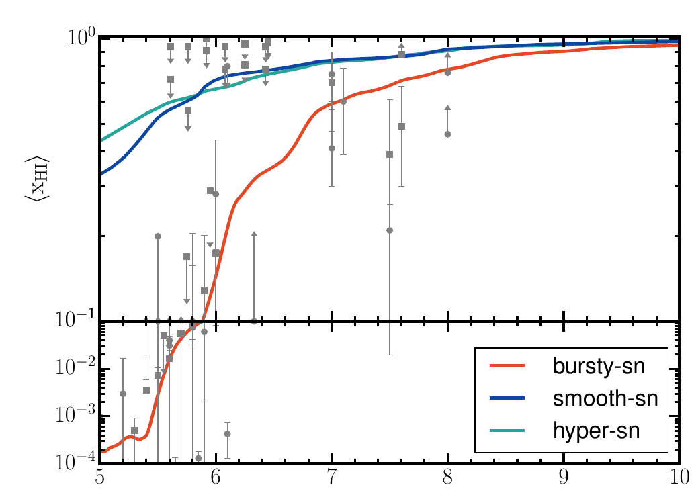
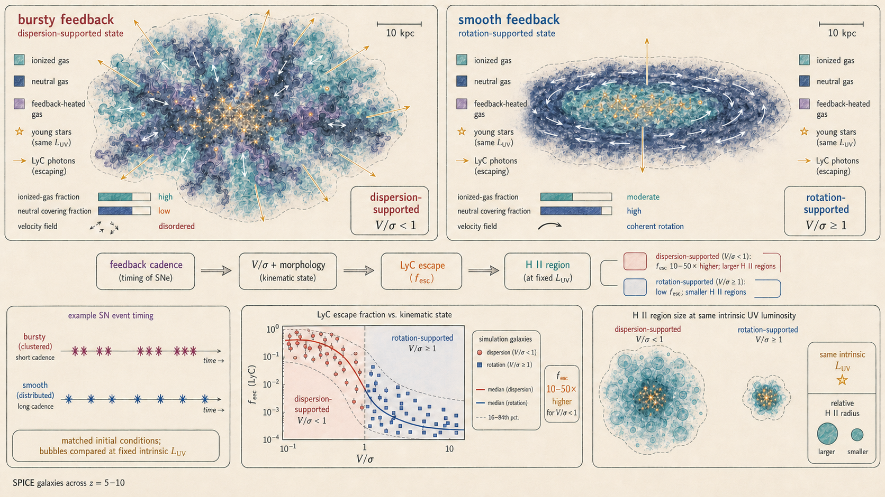

The foundational SPICE paper compares supernova timing, galaxy structure, ionising-photon escape, and the reionisation history within one matched set of simulations.
The feedback imprint is spatial. Matched temperature and metallicity maps show how changing supernova timing reorganises circumgalactic gas while leaving the underlying cosmological structure fixed.
First authorAniket Bhagwat
PublishedMNRAS 531 · 2024
SimulationThree matched volumes
Key figureReionisation history · Fig. 7
Can feedback set the pace of reionisation?
Producing ionising photons is not enough: those photons must escape a dense, structured interstellar medium before they can ionise the Universe.
The paper keeps the cosmology and galaxy sample fixed and changes how supernova energy is delivered. Concentrating explosions into short episodes or spreading them over tens of millions of years alters gas porosity, star-formation variability, outflows, and the ability of galaxies to settle into rotationally supported systems.
The analysis then measures star-formation histories, UV luminosity functions, galaxy kinematics, ionising emissivity, escape fractions, ionised bubbles, and the volume-weighted neutral hydrogen fraction. Some observables preserve differences between the feedback models; others become degenerate once dust is included.
A controlled numerical comparison
Volume
Resolve galaxies inside a cosmological box
Each run evolves a 10 h-1 cMpc box with 5123 dark-matter particles of mean mass 6.38 × 105 M⊙. Adaptive refinement reaches approximately 28 pc physical resolution at z = 5, with minimum stellar-particle masses near 970 M⊙.
Physics
Couple gas, stars, radiation, and dust
RAMSES-RT follows non-equilibrium chemistry and transports radiation in infrared, optical, and three ionising UV groups. Star formation uses a turbulence-dependent multi-freefall model, while supernovae inject mass, energy, and momentum mechanically.
Variable
Change only supernova timing and energy
Bursty-SN combines a stellar particle’s explosions at 10 Myr; Smooth-SN distributes them from 3–40 Myr; Hyper-SN adds a metallicity-dependent energetic channel. The shared initial conditions make differences directly attributable to feedback.
Three feedback histories, three reionisation tracks

Figure 7, Bhagwat et al. (2024). The volume-weighted neutral hydrogen fraction evolves differently in the matched feedback runs. Bursty-SN completes reionisation near z = 5.1 within the plotted constraints; Smooth-SN and Hyper-SN remain substantially more neutral at the end of the simulations. Plot cropped from the arXiv paper.
Horizontal axis
Cosmic time runs from high redshift on the right toward lower redshift on the left. The three curves separate well before reionisation ends.
Vertical axis
The logarithmic neutral fraction falls as ionised regions grow and overlap. Grey measurements and limits summarize observational constraints used in the paper.
The surprise
Smooth-SN and Hyper-SN produce more intrinsic ionising photons, yet reionise later. The limiting quantity is escape, not photon production alone.
Beyond the headline result
01
A main sequence is already present
A star-forming main sequence emerges by z = 10. Its median is similar across the runs, but Bursty-SN adds roughly 0.3–0.5 dex more scatter than the smoother models.
02
Dust hides intrinsic differences
Intrinsic 1500 Å luminosity functions vary substantially, including an excess of very bright galaxies in Smooth-SN and Hyper-SN. After dust attenuation, the three models become much harder to distinguish at z = 7 and 5.
03
Morphology retains the memory of feedback
Smooth-SN preferentially forms massive rotation-supported systems; Bursty-SN favours disturbed, dispersion-dominated galaxies; Hyper-SN produces a mass-dependent mixture.
04
Escape follows dynamical state
At fixed mass and across redshift, dispersion-dominated galaxies have LyC escape fractions about 10–50 times higher than rotation-dominated systems.
05
The global escape fractions diverge
Integrated over the galaxy populations, the inferred global escape fractions are approximately 6.8%, 1.8%, and 1.5% for Bursty-SN, Smooth-SN, and Hyper-SN.
06
Photon production is comparatively similar
The median ionising-photon production efficiency differs by only about 0.1–0.3 dex among models. The larger difference in their reionisation histories is driven mainly by ionising-photon escape.
The useful observable is a connected set, not one number
Galaxy morphology
Stellar and gas kinematics provide a route to the feedback duty cycle. A population dominated by stable discs points toward gentler energy injection; disturbed systems imply more explosive histories.
Ionised environment
At the same intrinsic luminosity, high-escape, dispersion-dominated galaxies should create larger ionised regions. The model predicts a statistical relation between morphology, bubble size, and Lyα visibility.
Mass contribution
Smooth-SN receives about 46% of escaping emissivity from galaxies above 109 M⊙, while Bursty-SN and Hyper-SN distribute it more evenly over roughly 107–1010 M⊙.
Multi-wavelength test
JWST morphology and nebular lines, ALMA cold-gas kinematics, and MUSE Lyα observations probe different links in the same feedback–structure–escape chain.
Feedback regulates reionisation mainly by changing escape
The simulations do not simply rank galaxies by how many ionising photons they make. Feedback changes the kinematic and morphological mix of the galaxy population. Dispersion-supported systems have Lyman-continuum escape fractions roughly 10–50 times those of rotation-supported systems across the redshifts studied.
The matched experiment therefore identifies a longer causal sequence: supernova coherence restructures the multiphase interstellar medium, that structure determines whether a stable rotating disc or a turbulent dispersion-supported system develops, and the resulting neutral-gas geometry regulates photon escape. At the same intrinsic luminosity, the high-escape, dispersion-supported population produces larger ionised regions. Reionisation constraints cannot therefore be interpreted from the ultraviolet luminosity function alone.

Kinematics connect feedback to reionisationThe same intrinsic stellar source can have a very different ionising impact. Bursty feedback favours porous, dispersion-supported systems with high LyC escape and larger H II regions; smoother feedback permits ordered discs whose surrounding gas absorbs more of the radiation. The image synthesises the paper’s morphology–escape result and is not simulation output.
Interpret the global history with care
Known modelling boundaries
The 10 h-1 cMpc volume is too small for a converged global reionisation history; late ionised regions can span tens of comoving Mpc, and boxes above roughly 100 h-1 cMpc are preferred for that purpose.
Radiation is transported with a reduced speed of light of 0.1c; this is economical but becomes least secure when ionisation fronts accelerate through voids near the end of reionisation.
The stellar SED, unresolved ISM prescriptions, and simplified dust treatment introduce systematic uncertainty into ionising production and escape.
Cosmic rays, magnetic fields, and AGN feedback are absent. The paper frames these as important extensions, not negligible effects.
The team intends to release documented derived products associated with this study. When a collection is ready, the Data index will provide its files, version, licence, documentation, and preferred citation. No public release is advertised yet.